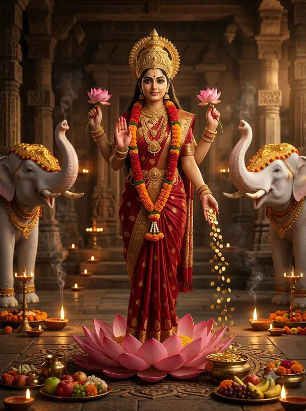

दिवाली कब है?
दिवाली 2026 में 8 नवंबर 2026, रविवार को है। यह कार्तिक मास के कृष्ण पक्ष की अमावस्या तिथि को शाम को मनाया जाता है।

दिवाली: तारीख़ और समय
| साल | तारीख़ | तिथि (कृष्ण अमावस्या) | पूजा का समय (नई दिल्ली) |
|---|---|---|---|
| 2026 | 8 नवंबर 2026, रविवार | सुबह 11:29, 8 नवंबर से दोपहर 12:32, 9 नवंबर तक | प्रदोष काल: शाम 5:31 से रात 7:55 तक |
| 2027 | 29 अक्टूबर 2027, शुक्रवार | रात 8:49, 28 अक्टूबर से रात 7:07, 29 अक्टूबर तक | प्रदोष काल: शाम 5:38 से रात 8:02 तक |
प्रदोष काल में माँ लक्ष्मी और गणेश जी की पूजा। इसकी पूजा प्रदोष काल (सूर्यास्त के बाद) में होती है, इसलिए वह दिन लिया जाता है जिस शाम यह तिथि हो।
दिवाली का महत्व
📖 दिवाली की कथा पढ़ें — सरल हिंदी में
कहाँ मनाया जाता है: पूरे भारत और दुनिया भर में
कार्तिक अमावस्या की शाम माँ लक्ष्मी और गणेश जी की पूजा होती है। मान्यता है कि इसी दिन श्रीराम 14 साल का वनवास पूरा करके अयोध्या लौटे थे और लोगों ने दीप जलाकर स्वागत किया था।
दिवाली की पूजा विधि
- घर की सफ़ाई करके रंगोली और दीपों से सजाएँ।
- प्रदोष काल या स्थिर लग्न में चौकी पर लक्ष्मी-गणेश की स्थापना करें।
- कलश, नवग्रह और कुबेर की पूजा करें।
- लक्ष्मी जी को कमल, खील-बताशे, मिठाई और सिक्के चढ़ाएँ।
- लक्ष्मी आरती और गणेश आरती करें, पूरे घर में दीपक जलाएँ।
सुनें और साथ गाएँ
 17:33
17:33महालक्ष्मी मंत्र — 108 बार (धन और सुख-शांति)
OmKiran Bhakti
 30:50
30:50महालक्ष्मी मंत्र — 108 बार
OmKiran Bhakti
अक्सर पूछे जाने वाले सवाल
दिवाली 2026 कब है?
दिवाली 2026 में 8 नवंबर 2026, रविवार को है। यह कार्तिक मास के कृष्ण पक्ष की अमावस्या तिथि को शाम को मनाया जाता है।
दिवाली किस तिथि को मनाया जाता है?
कार्तिक मास, कृष्ण पक्ष, अमावस्या। इसकी पूजा प्रदोष काल (सूर्यास्त के बाद) में होती है, इसलिए वह दिन लिया जाता है जिस शाम यह तिथि हो।
दिवाली का महत्व क्या है?
प्रदोष काल में माँ लक्ष्मी और गणेश जी की पूजा।
दिवाली पर लक्ष्मी पूजा का सबसे शुभ समय कौन सा है?
प्रदोष काल में वृषभ (स्थिर) लग्न का समय सबसे शुभ माना जाता है। सटीक समय हमारे लक्ष्मी पूजा मुहूर्त पेज पर है।
Diwali Lakshmi Puja 2026 date?
Diwali Lakshmi Puja 2026: 08 November 2026 (8 नवंबर 2026, रविवार).